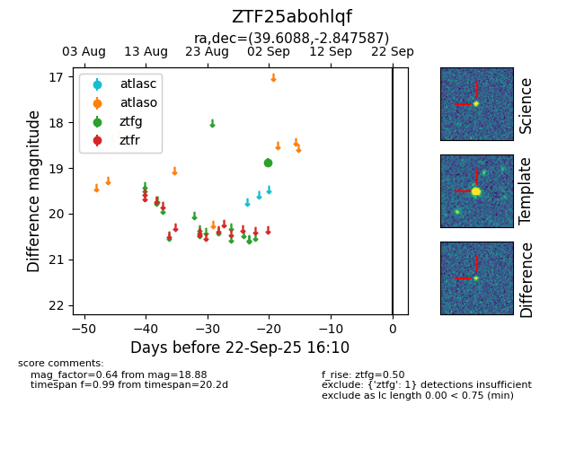

FINK: ZTF25abohlqf
Lasair: ZTF25abohlqf
ALeRCE: ZTF25abohlqf
ZTF25abohlqf (ztf,fink)
equatorial (ra, dec) = (39.6088,-2.84759)
galactic (l, b) = (174.0518,-54.72768)

last ztfg=18.88
1 ztfg detections